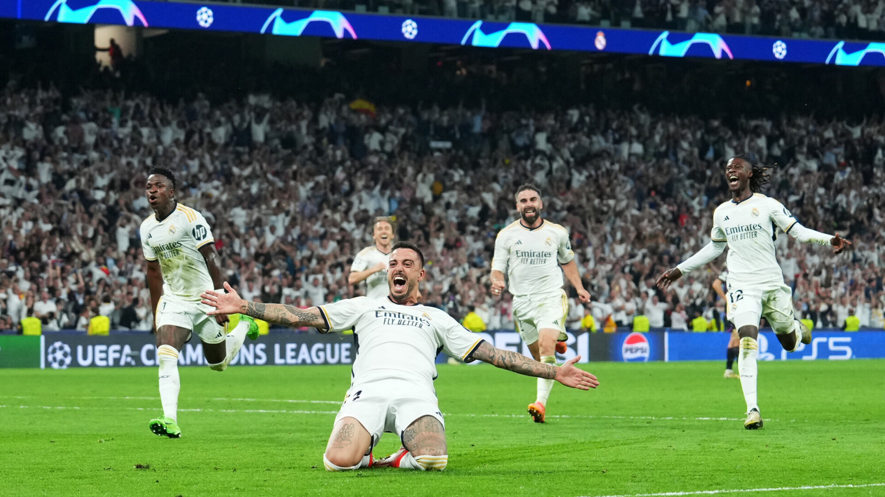
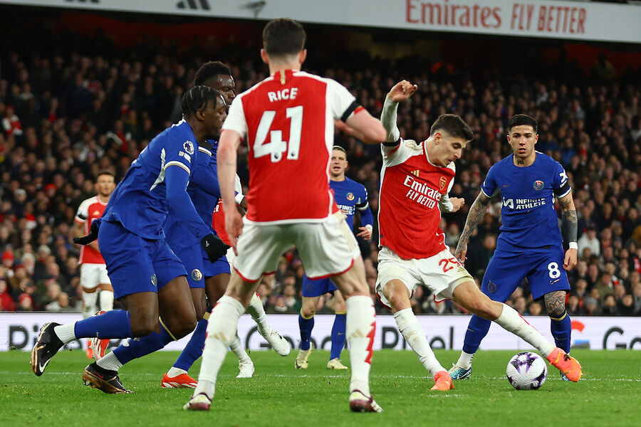
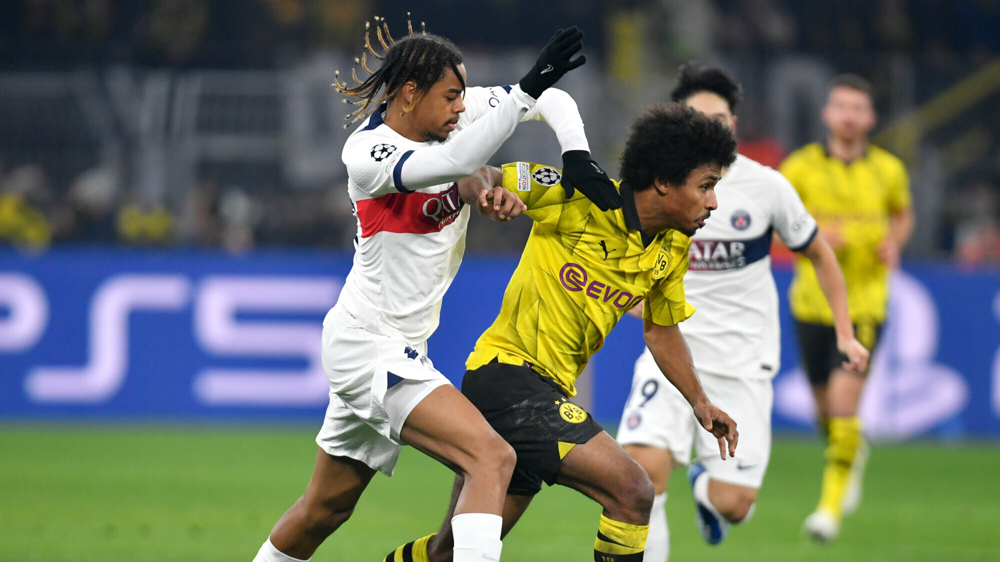
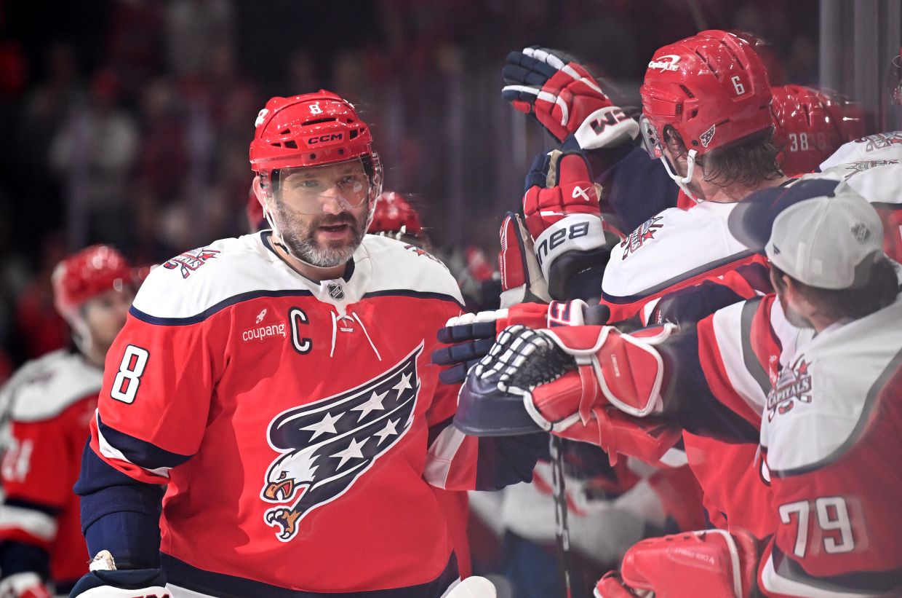
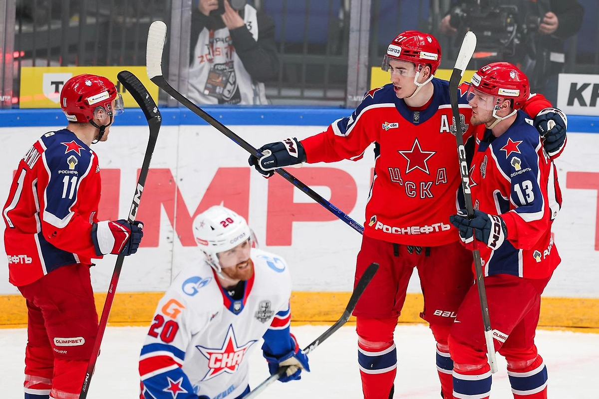
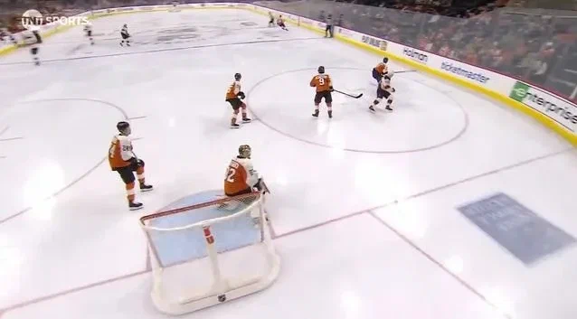

⚽ Футбол
🏒 Хоккей
🏀 Баскетбол
⚾ Теннис
Ещё
▼
🏐 Волейбол
🥊 Бокс / MMA
🏎️ Формула-1
🎯 Биатлон
📰 Главные новости спорта
обновлено 25 марта 2026
🏀 БАСКЕТБОЛ
Баскетбол / НБА
Лука Дончич выдал трипл-дабл в победе над «Денвером»
2 часа назад • ESPN
Словенский суперстар набрал 34 очка, 11 подборов и 12 передач. «Лейкерс» продолжают борьбу за топ-3 на Западе.
Подробнее →
Баскетбол / НБА
«Бостон» оформил 10-ю победу подряд, Татум — MVP недели
5 часов назад • NBA.com
Селтикс разгромили «Майами» 125–98, упрочив лидерство на Востоке. Порзингис добавил 27 очков.
Баскетбол / НБА
«Оклахома-Сити» обменяла будущий пик на усиление под кольцо
вчера • Shams Charania
Тандер продолжают укреплять состав перед плей-офф, заполучив опытного центрового.
⚽ ФУТБОЛ

Футбол / Лига чемпионов
«Реал» вырвал победу у «Баварии» в компенсированное время
3 часа назад • UEFA
Гол Беллингема на 92-й минуте приносит мадридцам путёвку в полуфинал Лиги чемпионов.

Футбол / АПЛ
«Арсенал» разгромил «Челси» 5:0, Салах оформил дубль
вчера • Premier League
Канониры упрочили лидерство в чемпионате, одержав крупнейшую победу в дерби за последние годы.

Футбол / Лига 1
ПСЖ сыграл вничью с «Боруссией» Дортмунд, Дембеле не реализовал пенальти
8 часов назад • L'Equipe
Парижане упустили возможность выйти в лидеры группы после ничьей 2:2.
🏒 ХОККЕЙ

Хоккей / НХЛ
Овечкин оформил дубль и приблизился к рекорду Гретцки
5 часов назад • NHL.com
Капитан «Вашингтона» забросил 887-ю и 888-ю шайбы в карьере. До рекорда Уэйна Гретцки осталось 6 голов.

Хоккей / КХЛ
ЦСКА выиграл пятый матч подряд в плей-офф КХЛ
вчера • КХЛ
Армейцы ведут в серии 3-2 против СКА после волевой победы в овертайме.

Хоккей / НХЛ
Макдэвид набрал 5 очков в матче с «Калгари», повторив рекорд клуба
12 часов назад • Sportsnet
Капитан «Эдмонтона» оформил хет-трик и две передачи, приблизив команду к плей-офф.
🎾 ТЕННИС
Теннис / ATP
Алькарас выиграл «Мастерс» в Майами, обыграв Синнера
2 дня назад • ATP Tour
Испанец взял реванш за прошлогодний финал, победив в трёх сетах. Это его 4-й титул на «Мастерсах».
Теннис / WTA
Соболенко — победительница турнира в Индиан-Уэллсе
вчера • WTA
Белорусская теннисистка обыграла Рыбакину в трёх сетах и вернулась на первую строчку рейтинга.
Теннис / ATP
Медведев вышел в четвертьфинал в Майами после победы над де Минором
14 часов назад • ATP
Россиянин обыграл австралийца в двух сетах и встретится с Зверевым за выход в полуфинал.
🏆 SportBox — главные спортивные новости со всего мира. Обновления ежедневно.